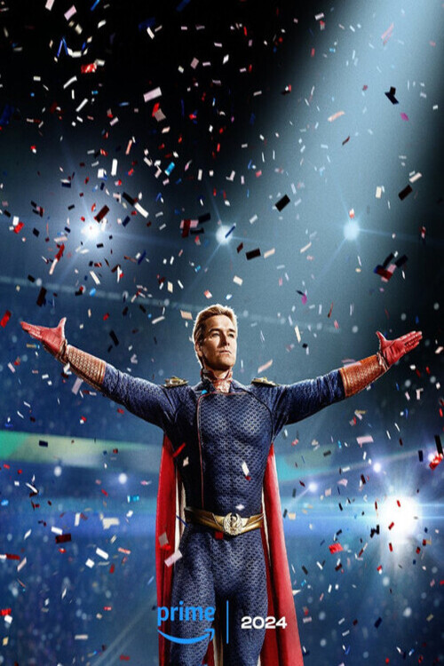

Séries
Descubra nossas séries favoritas!
The Queen's Gambit (2020)

Gênero: Drama
Sinopse: Esta minissérie da Netflix acompanha a vida de Beth Harmon, uma prodigiosa
jogadora de xadrez que luta contra o vício enquanto busca se tornar a maior jogadora de xadrez do
mundo. Ambientada durante a Guerra Fria, a série explora temas de genialidade, isolamento e a luta
pelo sucesso em um mundo dominado por homens.
WandaVision (2021)

Gênero: Super-herói, Ficção Científica, Drama
Sinopse: Uma série inovadora do universo Marvel que mistura sitcoms clássicas com o
MCU. A série segue Wanda Maximoff e Vision, que vivem uma vida suburbana idealizada, mas começam a
suspeitar que nem tudo é o que parece. Através de diferentes eras de sitcoms, WandaVision desvenda
um mistério complexo e emocional.
Squid Game (2021)
Gênero: Suspense, Drama
Sinopse: Esta série sul-coreana se tornou um fenômeno global, seguindo um grupo de
pessoas endividadas que aceitam participar de um jogo mortal para ganhar uma enorme quantia em
dinheiro. Cada jogo é baseado em brincadeiras infantis coreanas, mas com consequências mortais. A
série aborda temas de desigualdade social e desespero humano.
The Boys (2020-2024)

Gênero: Ação, Comédia, Drama
Sinopse: "The Boys" é uma série que subverte o gênero de super-heróis, apresentando
um grupo de vigilantes que tenta derrubar super-heróis corruptos e abusivos. Ambientada em um mundo
onde super-heróis são tratados como celebridades, a série é conhecida por seu humor negro, violência
gráfica e crítica social.